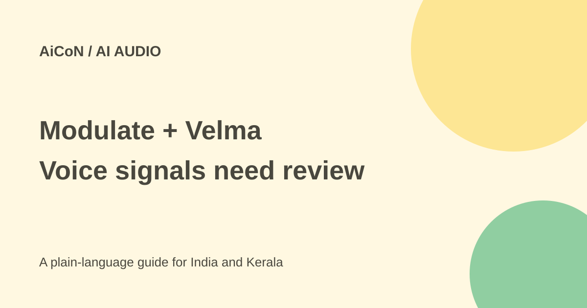

Modulate and Velma: voice AI, free API credits and limits
Modulate analyses audio signals beyond a transcript. Its current site has both an enterprise platform and a developer API with starter credits, so the old "not self-serve" description is too broad.

What does Modulate analyse?
Modulate describes Velma as audio-native AI: it examines how speech sounds as well as what is said. Its site lists detection, transcription, redaction, analysis and triage tools. Examples include emotion signals, synthetic-voice detection, AI-music detection and risks in conversations.
A transcript can lose tone, pauses and other acoustic information. Audio analysis can add signals, but a signal is not proof of intent, fraud or a person's mental state. Do not treat a confidence label as a final verdict about someone.
Enterprise platform versus developer API
The current homepage offers a platform demonstration for organisations and a separate API route for developers. The API is described as self-serve, with a sign-up link and model families. These routes can have different access, billing, support and data terms.
The API page gives examples for uploaded files and real-time streaming. Some model features are labelled planned rather than available. Check the actual model and endpoint before building a workflow around a marketing illustration.
Is there a free tier?
The official API overview says new users get 1,000 free credits to start with no card required. It says that equals 400 hours for Transcription specifically. Do not apply that equivalence to every detection, analysis or streaming model.
The page says Free rate limits are designed for development workloads; paid production limits can be configured, with volume discounts and enterprise agreements. Starter credits are not unlimited free production service. This guide did not create an account or process audio.
Current example API costs
The official price table lists English Fast Speech-to-Text at USD 0.025 per hour for batch and USD 0.05 for streaming, about ₹2.41 and ₹4.82. Multilingual Speech-to-Text is USD 0.03 batch and USD 0.06 streaming, about ₹2.89 and ₹5.79. It advertises more than 70 languages; confirm the particular language you need.
Deepfake Detection is listed at USD 0.25 per hour for batch and streaming, about ₹24.11. These examples use the same approximate ₹96.43-per-dollar reference, before tax and conversion differences. Add-ons and other models have separate prices. The pay-as-you-go table says 100 credits equal USD 1, about ₹96.43. A credit bucket or enterprise agreement can use different effective rates.
How to evaluate it safely
- Choose the exact model family matching your task.
- Read its current API documentation, billing unit and data terms.
- Use permitted test audio without sensitive personal details.
- Include clear and difficult examples, not only a polished demo clip.
- Measure false positives and false negatives across your actual languages and recording conditions.
- Have a human review consequential alerts.
- Only then consider live or large-scale deployment with suitable consent and controls.
For Kerala or Indian call audio, test Malayalam, English and code-switching rather than assuming a global claim covers every accent and language. Call quality, background noise and speaker overlap can change results.
Accuracy claims are vendor claims
The homepage describes Velma as two to four times more accurate than LLMs. Its funding release uses a narrower claim of twice the true-positive accuracy and seven times fewer false positives than traditional LLMs. Those are company statements about comparisons, not independent proof that every deployment performs that way.
The release also describes more than 100 specialised audio models and up to 1,000 times greater efficiency than a single-large-model approach. Model count and a maximum efficiency claim do not replace a measured cost and error rate on your workload.
Funding news
The official 28 September 2026 release confirms USD 25 million in new funding led by Future Ventures, with Hyperplane and Lakestar participating, taking total funding to USD 60 million. At the approximate ₹96.43-per-dollar archive reference, the new round is about ₹241 crore and total funding about ₹579 crore.
The earlier post used different approximate INR figures. Funding is not product revenue, an independent accuracy result or a guarantee that the service will suit your project.
Privacy and human impact
Voice recordings can contain personal information and sensitive conversations. Check lawful recording, participant notice, access, retention and model-use terms before uploading or streaming calls. A redaction tool should itself be tested; it may miss something important.
Do not automatically deny service, accuse a caller of fraud or penalise a worker solely on an emotion or deepfake flag. Use the signal as a reason for appropriate review and established verification steps.
What changed since the original AiCoN post?
This guide corrects the broad "not self-serve" statement: the current developer API offers starter credits without a card. It also separates those credits from enterprise access, narrows the transcription equivalence and updates the labelled INR funding comparison.
Frequently asked questions
Are 1,000 credits unlimited use?
No. They are starter credits with development limits.
Does an emotion label prove intent?
No. Review context and possible errors.
Is every model equivalent to 400 free hours?
No. That claim is for Transcription specifically.
Sources: Current homepage · API and starter credits · API pricing · Official funding and performance claims. Checked 7 October 2026.